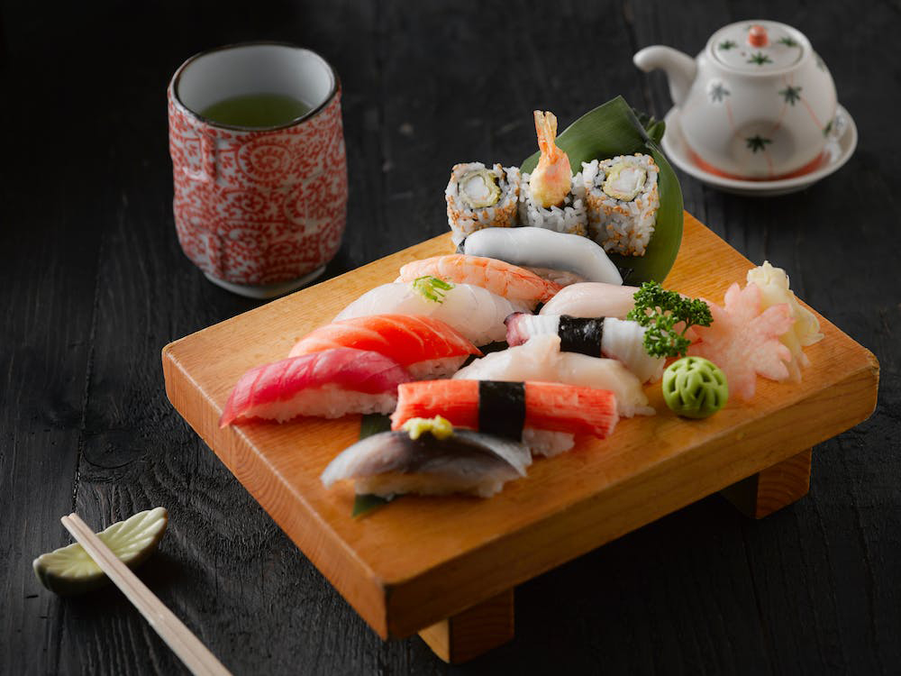
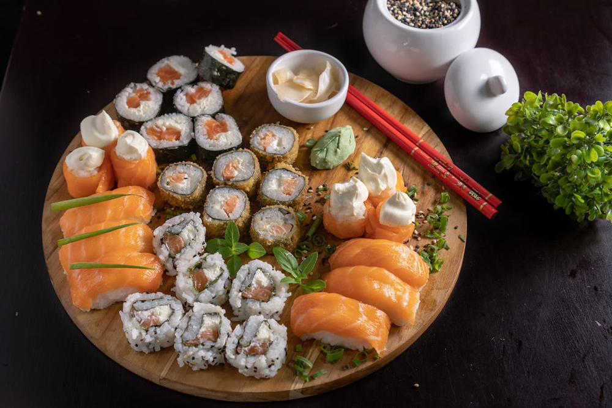
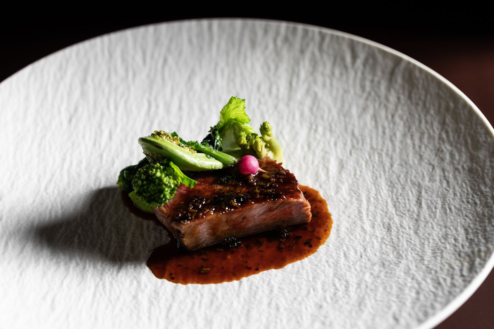
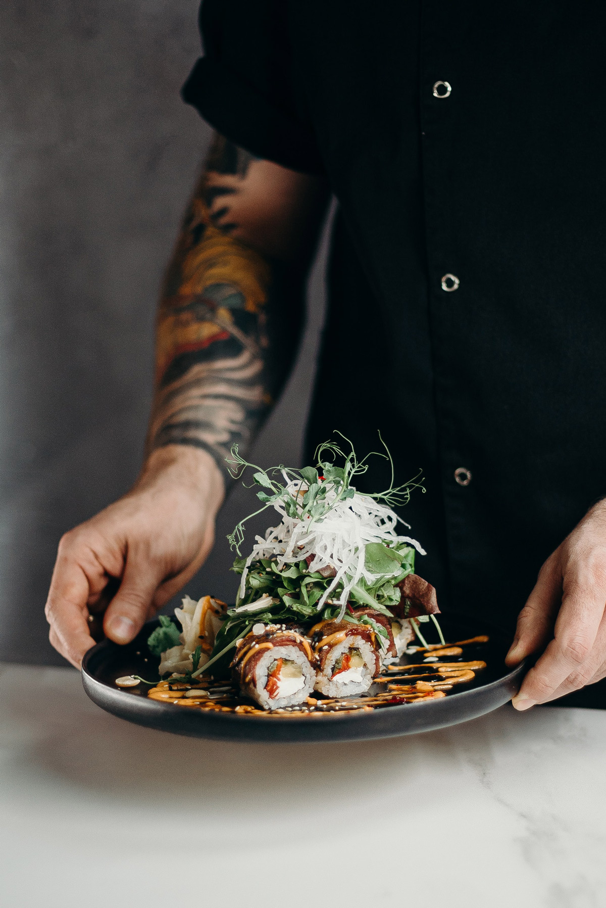
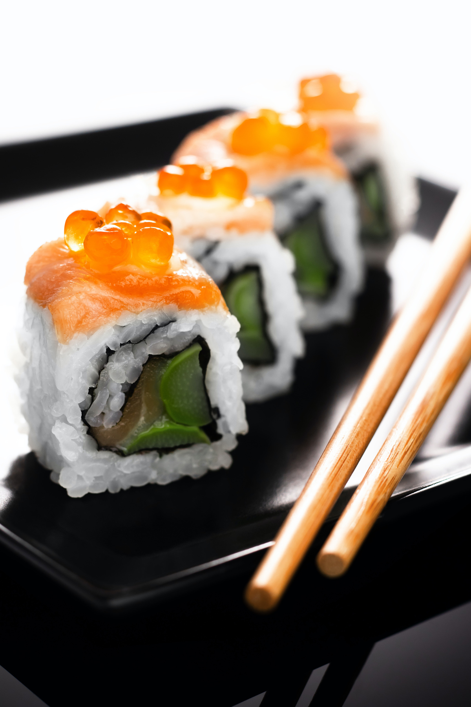
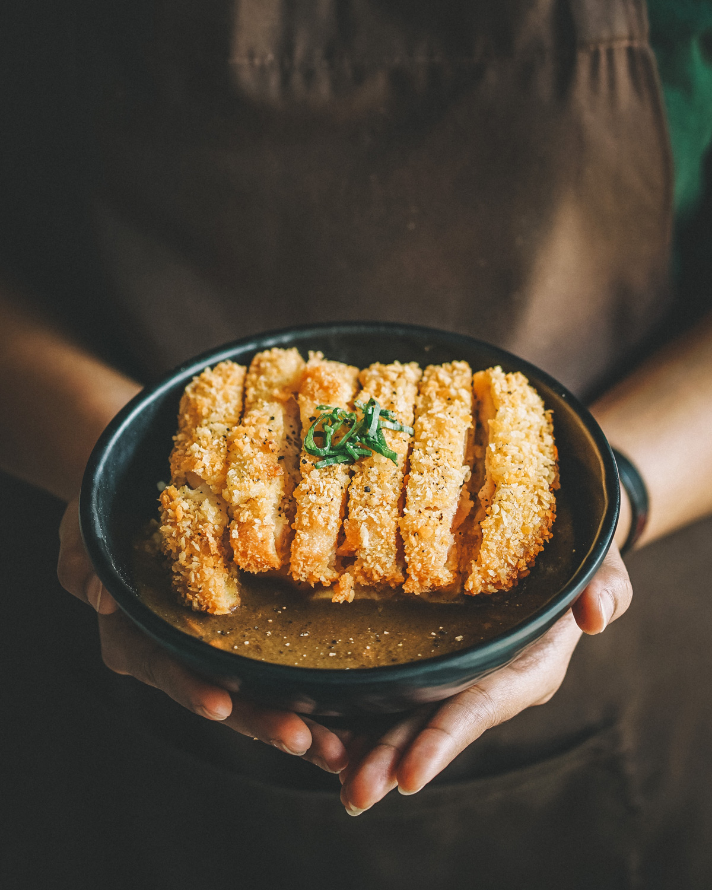
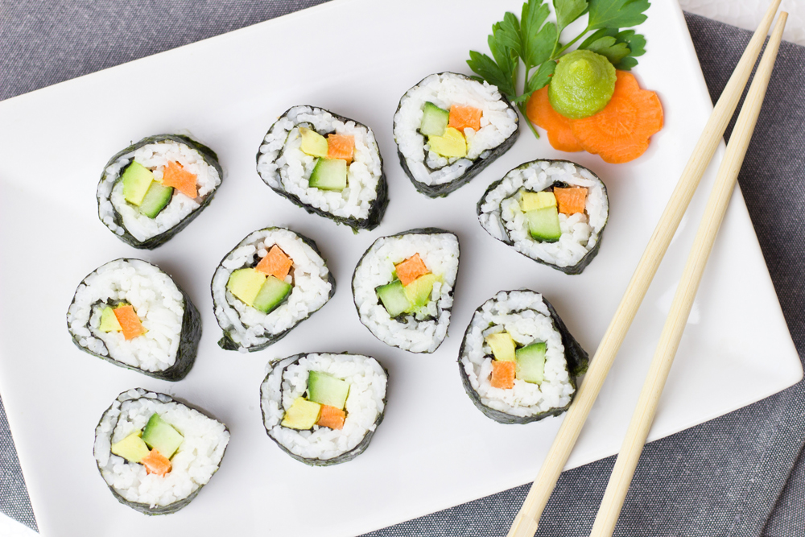

CARDÁPIO
Além do nosso incrível cardápio de combinados, trabalhamos com um rodízio diferenciado, onde destacamos os pratos:
- Yakisoba: macarrão frito com legumes, carne e molho de soja;
- Kare Raisu: arroz com curry e carne de porco;
- Tempura: legumes ou frutos do mar empanados e fritos;
- Unagi: enguia de água doce grelhada com molho doce;
- Yakitori: espetinhos de frango grelhados no carvão;
- Sopa de missô: sopa de pasta de soja fermentada com tofu e cebolinha;
- Sushi variados: bolinhos de arroz com peixe cru ou outros recheios envoltos em alga;
- Sashimi: fatias finas de peixe cru.






